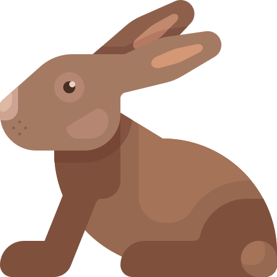

Página personal de Mar Prados Espigares
Mis aficiones
Diseño Web
Me encanta el diseño web. He tocado un poco de css3, htmIS y algo de javascript. Cada día pretendo aumentar un poquito más mis conocimientos, que luego comparto con mis alumnos.Siempre aprendiendo
Montaña
Me encanta salir a hacer rutas por la sierra. Es maravilloso estar rodeada de árboles, aire fresco y naturaleza. Sentir esa sensación de euforia y libertad cuando llegas a la cima...
Animales
Cuido, junto con mi hija de una mascota llamada Sara. Es una conejita blanca y negra. La cepillamos, le damos su comida, la llevamos al veterinario...y de vez en cuando la llevamos al parque donde corretea a sus anchas.

Otras aficiones
Otra de mis grandes aficiones, ¡¡¡ Las series !!!. No puedo evitarlo, cada vez me engancho a más series. Aunque algunas con el tiempo me van
aburriendo. Comparto esta afición con mi marido, que es un verdadero fanático.
Algunas de las imágenes son cortesía de: Icon made by freeapk from www.flaticon.com